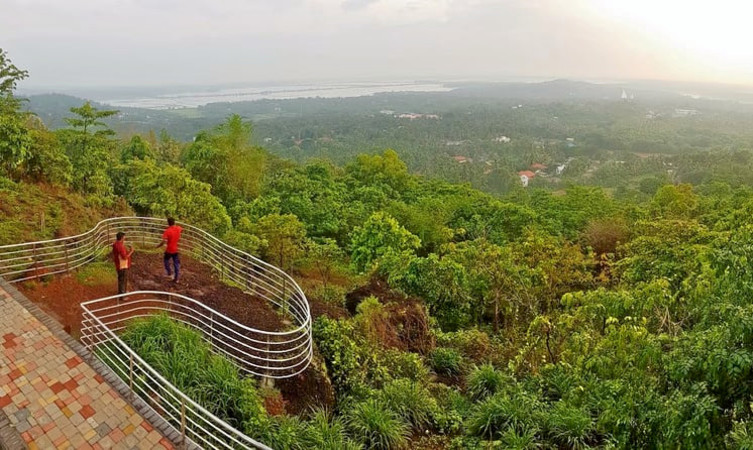

The cultural capital of Kerala, the Poorams or temple festivals in Thrissur draw in thousands of people every single year as these carnivals encapsulate every single part of Kerala's rich heritage. These are a hotbed of folk art performances and heritage tours that will give you an in depth look into some of the grandest traditions of the State. From majestic elephants to colourful pulikali processions to the world renowned Thrissur Pooram, there is always a festive atmosphere in the air. The district is also the abode of several cultural centres like Kerala Kalamandalam, Sahitya Academy and the Sangeetha Nataka Academy. Thrissur is a place one must visit at least once in their lifetime. The people, swaying with the beats of the chenda, shall help you understand the true heart and spirit of Kerala.
At a height of 80m, this is the largest waterfall of Kerala and is often regarded as the“ Niagra of India”. The Athirapally Falls is a charming cascade of frothy waters emerging from the Anamudi mountains of the western ghats. The Athirapally gushes across the lush green forest of Vazhachal towards the Arabian sea creating an exquisite panoramic spectacle. On the way to Athirapally, one may also visit the theme parks Dreamworld and Silver storm and decide to stay over at the many resorts strategically located amidst the greenery.
One of the most fascinating and unexplored beaches of the state of Kerala, the Chavakkad Beach is popularly one amongst the most famous Thrissur Tourist places. Perfect for picnickers, honeymooners, and tourists of all sorts, the golden sand of the beach is what at the tracts people from all corners of the country. The place where the beach is, there is a river that meets the sea, making an estuary. One of the best reasons for people to flock here is the colour of the waters, and the sight of fishermen going about their daily life. One can do a lot here, one of which is witnessing the amazing cleanliness of the area
When you are in Thrissur, you must prepare yourself to see some of the most amazing beauties of the waters around. And one of the best places to witness the magnificence of that is the Chettuva Backwaters. Starting from the Enamakkal Lake, the backwater runs through until ending in an estuary at the point where it meets the Arabian sea. One of the most important characters in this spot being known the world over are the mangroves here. Apart from that, there are several islands, a fort, and numerous sightings of migratory birds that make this place one of the best spots in Thrissur tourist places.